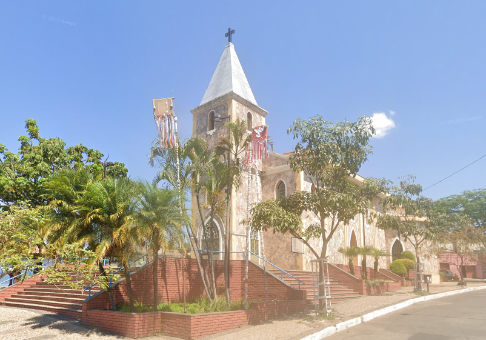

São Joaquim é um município localizado na região serrana de Santa Catarina, conhecido por suas paisagens montanhosas, clima frio e beleza natural. A cidade tem origem ligada à colonização e à tradição rural da região.
Seu povoado nasceu em torno da cultura da pequena produção agrícola e da vida comunitária, e ao longo do tempo se consolidou como destino turístico de inverno.
- Origem: começou como povoado ligado à região de São Joaquim e foi crescendo com base na agricultura e na vida serrana.
- Emancipação: tornou-se município com identidade própria, valorizando suas belezas naturais e sua cultura local.
